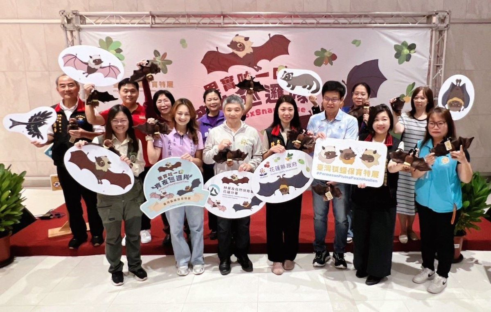

花蓮市區藏「夜行飛行員」 狐蝠保育特展遠百登場

可樂電子報小編/編輯
你知道嗎？花蓮市區的樹梢間，住著一群神秘的「夜間飛行員」！牠們白天休息、夜晚出門覓食，是臺灣第一級保育類野生動物臺灣狐蝠。花蓮縣政府農業處規劃「果實咬一口・宵夜巡邏隊」臺灣狐蝠保育特展，自11月4日起至12月10日在遠東百貨花蓮店一樓藝文陳列展區展出，並於11月6日下午舉辦開幕式。
開幕式吸引關心花蓮生態保育的機關、學校與民間團體到場，包括縣府農業處長陳淑雯、林業及自然保育署花蓮分署長黃群策、遠東百貨花蓮店長王翔新、縣府北區服務中心主任張治華、立委傅崐萁服務處主任王怡方、荒野保護協會花蓮分會副分會長李志芬、花蓮高農校長汪冠宏、明禮國小教導主任陳怡璇等人，展現各界對狐蝠保育的支持。
花蓮縣長徐榛蔚表示，臺灣狐蝠是臺灣現存體型最大的飛行哺乳動物，屬第一級保育類野生動物，也是極度瀕危物種。過去不少人以為狐蝠只出現在綠島或龜山島，其實花蓮市區也是重要棲息環境；研究調查顯示，目前花蓮市區約有160隻狐蝠活動，是臺灣本島極具特色的城市野生動物棲地。
徐榛蔚指出，狐蝠主要以大葉山欖、稜果榕、欖仁及瓊崖海棠等樹木果實為食，藉由取食與移動協助植物傳播種子，對維持生態具有重要意義。由於活動範圍與市民生活高度重疊，夜間偶爾被誤認為夜鷺或大型鳥類；縣府希望透過特展，讓更多人發現珍貴野生動物就在身邊，建立尊重生命、友善環境的保育觀念。
黃群策分享多年調查成果指出，狐蝠族群數量從六年前的50餘隻，增加到最新調查的210隻，族群明顯成長。李志芬期待花蓮參考日本經驗，把狐蝠保育納入都市計畫思考，透過民眾共識與制度化營造友善棲地；王翔新則希望透過百貨場域推廣，讓遠東百貨花蓮店持續成為環境教育與生態永續的重要夥伴。

陳淑雯說明，特展跳脫傳統靜態展示，以「果實咬一口・宵夜巡邏隊」為主題設計狐蝠IP角色，搭配木作立體樹形展板與綠意場景，規劃八大主題展區。民眾從領取集章卡開始，跟著狐蝠角色探索牠們的夜間作息、喜愛的食物、棲息環境與傳播種子的生態功能，也能認識白鼻心、大卷尾、鳳頭蒼鷹等城市動物鄰居。

展場「追蝠星地圖」帶民眾認識狐蝠在花蓮市區的活動範圍，學習「不幹擾、不打燈、不接觸」的友善觀察原則，並展示研究團隊追蹤用的「天線小揹包」發報器，宣導野生動物救援「1看、2照、3通報」與1999專線。展期限定像素遊戲「一起來夜遊北濱公園！」開放挑戰；週末安排解說員定場導覽，報名請至縣府農業處臉書。
🌟 掌握花蓮在地第一手資訊・歡迎訂閱追蹤
深度紀實報導、在地精采影音專題，第一時間接收最新消息！